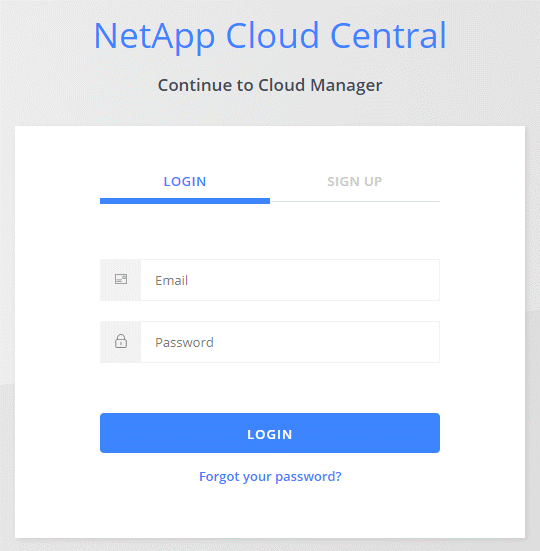

发行说明
发行说明
本产品推出了新版本。
简体中文版经机器翻译而成，仅供参考。如与英语版出现任何冲突，应以英语版为准。
登录到 Cloud Manager
贡献者
 建议更改
建议更改
您可以从任何连接到云管理器系统的 Web 浏览器登录到云管理器。您应使用登录 "NetApp Cloud Central" 用户帐户
步骤
-
打开 Web 浏览器并登录到 "NetApp Cloud Central"。
此步骤应自动将您定向到 Fabric 视图。如果没有，请单击 * Fabric View* 。
-
选择要访问的 Cloud Manager 系统。

如果您未看到列出任何系统，请确保帐户管理员已将您添加到与 Cloud Manager 系统关联的 Cloud Central 帐户。 -
使用您的 NetApp Cloud Central 凭据登录到 Cloud Manager 。
